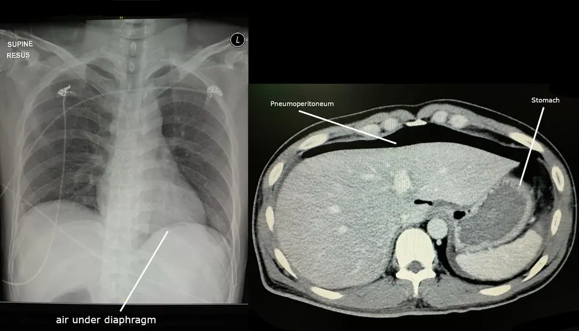

Distension abdominale
Sensation ou périmètre mesuré : dix concurrents, trois urgences qui tuent, une conduite suisse du cabinet aux urgences
Dix concurrents
- DX.1 — Syndrome de l’intestin irritable Premier rang : il ouvre la série, car le ballonnement touche 60 à 80 % des malades de ce groupe[1].
- DX.2 — Ballonnement abdominal fonctionnel Deuxième rang : le symptôme isolé atteint 15 à 20 % des adultes à un moment donné[1]. L’entité ne se retient pourtant que si les critères de l’intestin irritable manquent[8].
- DX.3 — Constipation fonctionnelle Troisième rang : elle figure parmi les causes banales qu’un ballonnement peut cacher, d’où sa place juste après les troubles fonctionnels[7].
- DX.4 — Grossesse Quatrième rang, parmi les causes non digestives : chez toute femme en âge de procréer, elle bombe l’abdomen et se reconnaît dès l’inspection, avant tout bilan digestif[12].
- DX.5 — Ascite Cinquième rang : parmi les cirrhotiques non contrôlés, 60 % la développent en dix ans, ce qui la rend fréquente sur ce terrain seulement[10].
- DX.6 — Globe vésical Sixième rang, parmi les causes non digestives : la vessie distendue dessine une voussure que l’inspection et la percussion repèrent avant tout examen digestif[12].
- DX.7 — Gastroparésie Septième rang : elle reste rare, mais le ventre gonflé y est un symptôme cardinal, présent chez plus de 50 % des malades de ce groupe[2].
- DX.8 — Occlusion intestinale mécanique 🚩 E3 Huitième rang : cette cause aiguë est plus rare que les motifs chroniques, et elle peut évoluer vers l’ischémie, la nécrose et la perforation[17].
- DX.9 — Perforation digestive 🚩 E2 Neuvième rang : elle est rare, et la défense avec l’absence de bruits digestifs l’annonce comme une pathologie grave[12].
- DX.10 — Rupture d’anévrisme de l’aorte abdominale 🚩 E1 Dixième rang : rare, elle passe en tête de gravité, car le collapsus et la douleur l’accompagnent[13].
1. Définition et sémantique
Critères de Rome
2. Épidémiologie (Suisse, puis Europe)
| Chiffre | Population | Année | Source |
|---|---|---|---|
| Environ 40 % des consultations de gastro-entérologie relèvent de maladies fonctionnelles. | Consultations de gastro-entérologie. | La synthèse suisse date de 2018. | Revue médicale suisse. |
| Le ballonnement ou la distension ont une prévalence ponctuelle de 15 à 20 %. | Population générale. | Article suisse de 2021. | Schweizer Gastroenterologie. |
| Le ballonnement touche 60 à 80 % des malades avec intestin irritable. | Syndrome de l’intestin irritable. | Article suisse de 2021. | Schweizer Gastroenterologie. |
| 64 % des malades avec intestin irritable lient les symptômes à l’alimentation. | Syndrome de l’intestin irritable. | Mise au point de 2020. | Société française d’hépatogastroentérologie. |
| 60 % des cirrhotiques non contrôlés développent une ascite en dix années[10]. | Cirrhose évolutive. | Revue suisse de 2012. | Revue médicale suisse. |
| La mortalité après apparition de l’ascite atteint 50 % à deux ans[10]. | Patients cirrhotiques devenus ascitiques. | Revues suisses de 2012 et de 2017. | Revue médicale suisse. |
3. Physiopathologie
| Perturbation | Exploration qui la montre | Thérapeutique qui la corrige |
|---|---|---|
| Le diaphragme trop bas et la paroi relâchée font bomber le ventre. | L’inspection du périmètre et la respiration abdominale montrent le déséquilibre. | Le sport, la régulation des selles et l’éducation forment la première ligne. |
| Les gaz bactériens et les sucres fermentescibles gonflent la lumière. | Le lien avec les repas oriente, sans test respiratoire de première intention. | La restriction des FODMAP, conduite avec une diététicienne, réduit le substrat. |
| La vidange gastrique ralentie retient gaz et repas. | La scintigraphie de vidange gastrique confirme la gastroparésie. | Le prokinétique prucalopride est proposé quand le trouble moteur est prouvé. |
| Le liquide péritonéal s’accumule quand le gradient portal dépasse le seuil. | La matité, l’échographie et le gradient d’albumine montrent le liquide. | La paracentèse, le sel contrôlé et le diurétique corrigent le volume, avec une cible de poids. |
| L’air libre signe une fuite hors du tube digestif. | Le scanner montre le pneumopéritoine, mieux que le cliché. | La chirurgie de la perforation se prépare, et le laxatif osmotique est contre-indiqué. |
Accommodation diaphragmatique
4. Démarche diagnostique
| Diagnostic | Élément qui tranche | Piège | Conduite si le résultat est positif |
|---|---|---|---|
| DX.10 — Rupture d’anévrisme de l’aorte abdominale, 🚩 E1. | Le collapsus avec douleur abdominale ou dorsale tranche vers la rupture. | La palpation manque souvent l’anévrisme, et attribuer le ventre tendu à des gaz fait perdre du temps. | On appelle la chirurgie vasculaire et on tolère une pression basse tant que le patient reste conscient. |
| DX.9 — Perforation digestive, 🚩 E2. | La défense et le pneumopéritoine au scanner tranchent. | Un estomac plein imite une clarté, et le décubitus peut masquer un petit croissant. | On garde à jeun et on contre-indique le macrogol. |
| DX.8 — Occlusion intestinale mécanique, 🚩 E3. | L’arrêt des matières et le scanner orientent, après exclusion de l’air libre. | Un iléus réflexe accompagne d’autres drames et n’est pas à lui seul une bride. | On aspire par sonde, on perfuse et on juge l’ischémie avec le chirurgien. |
| DX.5 — Ascite. | La matité déclive et le liquide à l’échographie tranchent. | Un volume faible échappe à la percussion et ne se voit qu’à l’ultrason. | On ponctionne avant de traiter si l’ascite est inaugurale et déjà clinique. |
| Rang | Diagnostic | Fréquence retenue | Gravité | Signe qui tranche | Premier geste |
|---|---|---|---|---|---|
| DX.1 | Syndrome de l’intestin irritable | Ballonnement chez 60 à 80 % des malades. | Chronique, sans rang E. | La douleur liée à la défécation atteint le seuil de fréquence. | On pose le diagnostic positif et on traite le transit, pas un organe imaginaire. |
| DX.2 | Ballonnement abdominal fonctionnel | Symptôme présent chez 15 à 20 % des adultes. | Chronique, sans rang E. | La plainte domine, sans douleur de type irritable et sans alarme. | On confirme les critères, puis on explique et on adapte le mode de vie. |
| DX.3 | Constipation fonctionnelle | Troisième rang, cause banale citée par la source. | Chronique, sans rang E. | Les selles rares ou dures expliquent le périmètre, sans obstacle. | On reprend les fibres solubles, les selles et le mouvement, et le macrogol seulement si l’obstacle est écarté. |
| DX.4 | Grossesse | Quatrième rang, à exclure chez toute femme en âge de procréer. | Physiologique, sans rang E. | La voussure médiane et l’aménorrhée orientent. | On confirme la grossesse avant toute imagerie irradiante ou tout laxatif. |
| DX.5 | Ascite | Cinquième rang, fréquente sur cirrhose évolutive. | Potentiellement grave, sans rang E de minute. | La matité déclive ou l’échographie montre un liquide libre. | On ponctionne une ascite inaugurale déjà clinique avant le diurétique. |
| DX.6 | Globe vésical | Sixième rang, voussure repérée à l’inspection. | Douloureux, sans rang E. | La matité sus-pubienne localisée se perçoit à la percussion. | On vide la vessie et on cherche la cause de la rétention. |
| DX.7 | Gastroparésie | Rare, ballonnement chez plus de 50 % des malades. | Chronique, sans rang E. | Le ballonnement épigastrique après le repas domine. | On confirme par scintigraphie, puis on discute le prucalopride. |
| DX.8 | Occlusion intestinale mécanique | Huitième rang, aiguë et plus rare. | 🚩 E3, heures. | Vomissements et arrêt des gaz, sans air libre sous la coupole. | On aspire, on perfuse et on juge une ischémie avec le chirurgien. |
| DX.9 | Perforation digestive | Neuvième rang, aiguë et rare. | 🚩 E2, heures. | La défense et l’air libre sous la coupole ou en avant du foie. | On laisse à jeun, on contre-indique le macrogol et on prépare le bloc. |
| DX.10 | Rupture d’anévrisme de l’aorte abdominale | Dixième rang, rare. | 🚩 E1, minutes. | Le collapsus, la pâleur et la douleur dominent la distension aiguë. | On appelle la chirurgie vasculaire et on applique l’hypotension permissive. |
Ordre de gravité
5. Anamnèse ciblée et drapeaux rouges
| Drapeau | Signification | Action |
|---|---|---|
| Le collapsus avec distension aiguë signifie une possible rupture d’anévrisme. | Le saignement aortique peut distendre l’abdomen. | On appelle la chirurgie vasculaire avant tout bilan fonctionnel. |
| La défense et le silence abdominal signifient une possible perforation. | L’air libre au scanner confirme la fuite. | On stoppe l’alimentation et on n’administre pas de macrogol. |
| Les vomissements et l’arrêt des gaz signifient une occlusion. | La lumière est bloquée ou étranglée. | On décompresse par la sonde et on cherche l’ischémie. |
| L’amaigrissement, le sang ou une masse signifient une lésion organique. | Le critère fonctionnel ne s’applique plus. | On prescrit biologie et endoscopie, surtout après 50 ans. |
| La fièvre avec ascite connue signifie une possible infection du liquide. | Les neutrophiles du liquide tranchent. | On ponctionne et on ensemence avant l’antibiotique. |
Drapeaux d’alarme
6. Examen physique ciblé, région par région
Signes vitaux
Inspection de l’abdomen
Percussion
Palpation
Auscultation
Matité et flot
7. Approche syndromique
7.1 Syndrome de distension tympanique
7.2 Syndrome de distension mate
7.3 Syndrome de distension douloureuse aiguë
7.4 Syndrome de voussure médiane
7.5 Syndrome de ballonnement épigastrique postprandial
| Syndrome | Signes fonctionnels | Signes physiques |
|---|---|---|
| 7.1 Distension tympanique. | La pression, les vents et parfois l’arrêt des gaz dominent le récit. | Le tympanisme diffus et un périmètre augmenté se retrouvent à l’examen. |
| 7.2 Distension mate. | La pesanteur des flancs ou une gêne pelvienne dominent. | La matité des flancs, déclive, ou une matité médiane localisée se perçoit. |
| 7.3 Distension douloureuse aiguë. | La douleur brutale, le vomissement ou le malaise dominent. | La défense, le silence auscultatoire ou le collapsus se cherchent. |
| 7.4 Voussure médiane. | Une aménorrhée ou une miction difficile orientent le récit. | La matité médiane localisée ne se déplace pas avec la position. |
| 7.5 Ballonnement épigastrique postprandial. | La plénitude après le repas domine. | L’examen reste souvent pauvre, et la scintigraphie tranche. |
Trois syndromes
8. Diagnostic positif et critères
| Entité | Ce qui suffit | Ce qui ne suffit pas |
|---|---|---|
| Ballonnement abdominal fonctionnel, critères de 2016. | La plainte domine, dure depuis 6 mois et revient au moins un jour par semaine sur 3 mois. | Une alarme, une occlusion ou assez de douleur pour l’intestin irritable font sortir du cadre. |
| Syndrome de l’intestin irritable. | La douleur revient au moins 1 jour par semaine sur 3 mois, avec au moins 2 traits liés aux selles. | Un simple inconfort sans douleur ne remplit plus la définition actuelle. |
| Ascite. | La ponction ou l’échographie montrent le liquide. | Le périmètre seul ne distingue pas le liquide du gaz ni de la graisse. |
| Gastroparésie. | La scintigraphie montre une vidange gastrique ralentie. | Le ballonnement épigastrique seul reste un indice. |
Seuil statistique
9. Examens complémentaires
9.a Référence
9.b Première intention
9.c Alternatives
9.d Deuxième intention
| Résultat | Signification | Conduite |
|---|---|---|
| De l’air libre siège sous la coupole ou en avant du foie. | Le tube a fui : perforation, non rupture aortique isolée. | On garde à jeun et on prépare le bloc, sans macrogol. |
| Neutrophiles du liquide supérieurs à 250 par microlitre. | Péritonite bactérienne spontanée jusqu’à preuve contraire. | On ensemence 10 ml au lit et on traite l’infection. |
| Gradient d’albumine d’au moins 11 g/l. | Hypertension portale dans 97 % de ces ascites. | On cherche la cirrhose et on ne conclut pas d’emblée à une carcinose. |
| Protéines du liquide inférieures à 15 g/l. | Risque infectieux plus haut sur ce liquide pauvre. | On discute une prophylaxie au long cours. |
| Calprotectine fécale élevée. | Inflammation intestinale probable, hors cadre fonctionnel. | On adresse au gastro-entérologue pour endoscopie. |
| Sérologie anti-transglutaminase IgA positive avec IgA totales normales. | Maladie cœliaque probable. | On confirme par biopsies duodénales avant tout régime. |
Liquide d’ascite
Air libre
Fiche cliché. La modalité est une radiographie thoracique de face jointe à une coupe axiale de scanner.
L’incidence est une face en décubitus, car l’inscription SUPINE le montre, et un marqueur L est présent.
La latéralité est indiquée par le marqueur L sur le cliché thoracique.
Les inscriptions lisibles sont SUPINE, RESUS, air under diaphragm, Pneumoperitoneum et Stomach.

On lit d’abord ce cliché brut, et l’on y cherche soi-même la clarté anormale.
La copie annotée numérote trois repères, et elle est une œuvre dérivée.
- Le croissant clair sous la coupole gauche sépare le diaphragme de l’ombre sous-jacente, donc il s’agit d’air libre et non d’un simple estomac.
- Sur la coupe, la bande noire s’étale en avant du foie, car l’air remonte contre la paroi quand le patient est couché.
- Le foie reste homogène sur cette coupe, et aucun hématome rétropéritonéal n’y explique la distension.
Ce que l’image décide. L’air libre tranche pour la perforation digestive E2 et contre la rupture d’anévrisme E1, donc on prépare le bloc et on n’administre pas de macrogol[11].

10. Arbre décisionnel
- Si un collapsus et une distension aiguë évoquent la rupture d’anévrisme E1, on appelle la chirurgie vasculaire et on tolère une pression basse tant que le patient reste conscient[13].
- Si la défense et l’air libre sont présents, on retient la perforation E2, on laisse à jeun et on n’administre pas de macrogol[11].
- Si les vomissements et l’arrêt des gaz dominent sans air libre, on retient l’occlusion E3, on perfuse et on décompresse par sonde[17].
- Si une voussure médiane apparaît, on vérifie la grossesse chez la femme jeune et l’on cherche un globe vésical par la percussion[12].
- Si la matité déclive ou l’échographie montrent un liquide, on ponctionne avant de traiter lorsque l’ascite est inaugurale[9].
- Si un ballonnement épigastrique postprandial domine, on demande une scintigraphie de vidange pour la gastroparésie[7].
- Si aucune alarme n’existe et que la plainte récidive, on se limite au minimum d’examens puis à l’exercice, aux selles et à l’alimentation[3].
Sens de l’ordre
11. Prise en charge selon les recommandations suisses
11.A But
11.B Moyens
| Spécialité | Dose | Voie | Durée | Contre-indication | Extrait AIPS |
|---|---|---|---|---|---|
| Movicol®, macrogol 3350, n° Swissmedic 53869 | Constipation dès 12 ans : 1 à 2 sachets par jour, dès 65 ans 1 sachet ; coprostase : 8 sachets en 6 h[11] | Orale, sachet dissous dans 125 ml d’eau | Sans avis 3 mois au plus ; coprostase 3 jours au plus | Contre-indiqué en cas de perforation, d’obstruction, d’iléus, de colite sévère ou de mégacôlon toxique | Information Movicol, Norgine AG[11] |
| Aldactone®, spironolactone, n° Swissmedic 27257 | Ascite : 100 mg par jour si Na/K urinaire au-delà de 1,0 ; 200 à 400 mg par jour en dessous[15] | Orale, avec les repas | Effet complet au 3e jour ; entretien à la dose la plus basse | Contre-indiqué en cas d’insuffisance rénale sévère, d’anurie, d’hyperkaliémie, d’hyponatrémie ou d’Addison | Information professionnelle Aldactone®[15] |
| Lasix®, furosémide, n° Swissmedic 30629 | Début ½ à 2 comprimés de 40 mg par jour ; entretien ½ à 1 comprimé[16] | Orale, à jeun | Dose la plus faible possible, sous contrôle des électrolytes | Contre-indiqué en cas d’anurie, de coma hépatique, d’hypokaliémie sévère, d’hypovolémie ou d’allaitement | Information professionnelle Lasix®[16] |
11.C Parcours suisse et remboursement
11.D Surveillance
11.E Pronostic, guérison, sortie
Urgence chronologique
- Étape 1 : on prend la pression, le pouls et l’état de conscience, car une systolique sous 80 mmHg ou une conscience altérée définissent l’instabilité[13].
- Étape 2 : si une rupture d’anévrisme est suspectée, on appelle la chirurgie vasculaire et l’on tolère une pression basse tant que le patient reste conscient[13].
- Étape 3 : si l’état le permet, l’angioscanner confirme la rupture et prépare la réparation endovasculaire[13].
- Étape 4 : sans rupture, on cherche la défense et le pneumopéritoine au scanner, qui signent une perforation[18].
- Étape 5 : devant une occlusion, on perfuse, on pose une sonde nasogastrique et l’on guette l’ischémie[17].
- Étape 6 : on n’ouvre le sachet de macrogol que lorsque ces trois portes sont fermées[11].
Poudre osmotique
12. Prévention
13. Points clés
- On mesure le périmètre avant de nommer une distension, car la sensation seule est un ballonnement.
- On ouvre par la rupture d’anévrisme E1, puis par l’air libre de la perforation E2, puis par l’occlusion E3.
- La grossesse et le globe vésical se reconnaissent à l’inspection, avant tout bilan digestif.
- Une rechute calme justifie un bilan court, puis le mouvement, le transit et les repas reprennent.
- Movicol® est contre-indiqué si la perforation, l’obstruction ou l’iléus restent possibles.
- L’ascite inaugurale déjà clinique se ponctionne avant la spironolactone, et le poids a une cible.
14. Pièges et questions fréquentes à l’examen fédéral suisse
| Question | Réponse | Raison |
|---|---|---|
| Une sensation de gaz suffit-elle à parler de distension ? | Non, car la distension exige un périmètre qui augmente. | La sensation porte un autre nom, et les deux ne coexistent pas toujours. |
| Une récidive sans alarme impose-t-elle le même bilan que la première fois ? | Non, car seule la première manifestation exige une exploration soigneuse. | La récidive calme se contente d’un minimum d’examens. |
| Peut-on donner le macrogol dès que le ventre est tendu ? | Non, si la perforation, l’obstruction ou l’iléus n’est pas écarté. | Ces trois situations sont des contre-indications de la spécialité. |
| Un gradient d’albumine à 11 g/l signifie-t-il une carcinose ? | Non, car ce seuil rattache l’ascite à l’hypertension portale dans la grande majorité des cas. | La carcinose se discute plutôt quand le gradient est bas. |
| Un abdomen souple à la palpation exclut-il la rupture d’anévrisme ? | Non, car la palpation manque souvent l’anévrisme. | Le collapsus et l’angioscanner tranchent, pas la main. |
| Faut-il remplir largement un patient conscient avec rupture d’anévrisme ? | Non, on retarde le remplissage agressif jusqu’au contrôle aortique. | La recommandation européenne retient l’hypotension permissive. |
Ce cours, lu seul avec ses fenêtres, suffit-il pour gagner 90 à 100 % des points sur ce sujet et pour traiter ce patient en sécurité ?
Sources
- [1] Schweizer Gastroenterologie (Swiss), 2021. Blähungen und abdominelle Distension : définitions, prévalence, groupes touchés. https://link.springer.com/article/10.1007/s43472-021-00048-w, consulté le 2026-11-11.
- [2] Schweizer Gastroenterologie (Swiss), 2021. Mécanismes : accommodation abdominale, gaz, hypersensibilité, troubles moteurs. https://link.springer.com/article/10.1007/s43472-021-00048-w, consulté le 2026-11-11.
- [3] Schweizer Gastroenterologie (Swiss), 2021. Bilan initial, imagerie, traitement de base et options thérapeutiques. https://link.springer.com/article/10.1007/s43472-021-00048-w, consulté le 2026-11-11.
- [4] Revue médicale suisse, 2018. Maladies fonctionnelles digestives, part des consultations. https://www.revmed.ch/revue-medicale-suisse/2018/revue-medicale-suisse-616/maladies-fonctionnelles-digestives-mise-au-point-concernant-la-classification-rome-iv, consulté le 2026-11-11.
- [5] Revue médicale suisse, 2018. Critères de Rome IV publiés en 2016, définition de l’intestin irritable. https://www.revmed.ch/revue-medicale-suisse/2018/revue-medicale-suisse-616/maladies-fonctionnelles-digestives-mise-au-point-concernant-la-classification-rome-iv, consulté le 2026-11-11.
- [6] Revue médicale suisse, 2018. Seuil au 90e percentile sur plus de 1 600 adultes. https://www.revmed.ch/revue-medicale-suisse/2018/revue-medicale-suisse-616/maladies-fonctionnelles-digestives-mise-au-point-concernant-la-classification-rome-iv, consulté le 2026-11-11.
- [7] FMC-HGE, 2020. Ballonnement et distension : définitions, alimentation, âge et examens. https://www.fmcgastro.org/texte-postu/postu-2020-paris/ballonnement-la-terreur-du-gastroenterologue-comment-etre-efficace/, consulté le 2026-11-11.
- [8] Critères de Rome IV, 2016. Distension et ballonnement abdominal fonctionnel, durée et signes d’alarme (MDCalc). https://www.mdcalc.com/calc/10272/rome-iv-diagnostic-criteria-functional-abdominal-bloating-distension, consulté le 2026-11-11.
- [9] Revue médicale suisse, 2017. Ascite inaugurale du cirrhotique : stades, clinique, liquide, paracentèse. https://www.revmed.ch/revue-medicale-suisse/2017/revue-medicale-suisse-573/prise-en-charge-initiale-de-l-ascite-inaugurale-chez-le-patient-cirrhotique, consulté le 2026-11-11.
- [10] Revue médicale suisse, 2012. Hypertension portale, histoire naturelle de l’ascite, diurétiques et cibles de poids. https://www.revmed.ch/revue-medicale-suisse/2012/revue-medicale-suisse-352/hypertension-portale-et-prise-en-charge-de-l-ascite, consulté le 2026-11-11.
- [11] Information suisse Movicol, poudre, n° Swissmedic 53869, Norgine AG. Composition, posologie, contre-indications, limitation LS. https://compendium.ch/fr/product/65653-movicol-pdr, consulté le 2026-11-11.
- [12] Revue médicale suisse, 2016. Examen de l’abdomen : et si nous refaisions nos gammes ? https://www.revmed.ch/revue-medicale-suisse/2016/revue-medicale-suisse-537/examen-de-l-abdomen-et-si-nous-refaisions-nos-gammes, consulté le 2026-11-11.
- [13] European Society for Vascular Surgery, 2024. Guidelines on the Management of Abdominal Aorto-Iliac Artery Aneurysms, chapitre 6 (rupture). https://doi.org/10.1016/j.ejvs.2023.11.002, consulté le 2026-11-11.
- [14] Garcia-Tsao G, Bosch J. Management of Varices and Variceal Hemorrhage in Cirrhosis. N Engl J Med, 2010. https://doi.org/10.1056/nejmra0901512, consulté le 2026-11-11.
- [15] Information professionnelle suisse Aldactone®, comprimés pelliculés, n° Swissmedic 27257 (AIPS). https://arzneimittelinfo.ch/fr/aldactone-224654/information-professionnelle, consulté le 2026-11-11.
- [16] Information professionnelle suisse Lasix® comprimés (furosémide), n° Swissmedic 30629 (AIPS). https://arzneimittelinfo.ch/fr/lasix-40-mg-224703/information-professionnelle, consulté le 2026-11-11.
- [17] Revue médicale suisse, 2011. Occlusion grêle aiguë : traitement conservateur ou chirurgical ? https://www.revmed.ch/revue-medicale-suisse/2011/revue-medicale-suisse-300/occlusion-grele-aigue-traitement-conservateur-ou-chirurgical, consulté le 2026-11-11.
- [18] CDU-HGE, 2014. Les fondamentaux de la pathologie digestive, chapitre 15 : occlusions intestinales. https://www.snfge.org/sites/default/files/SNFGE/Formation/chap-15_fondamentaux-pathologie-digestive_octobre-2014.pdf, consulté le 2026-11-11.
- [19] Critères de Rome IV, 2016. Syndrome de l’intestin irritable de l’adulte (MDCalc). https://www.mdcalc.com/calc/4007/rome-iv-diagnostic-criteria-irritable-bowel-syndrome-ibs, consulté le 2026-11-11.